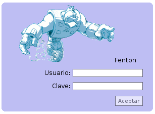

Next: Inicio Up: Fenton - Manual de Previous: Introducción Contents

El usuario deberá ingresar su nombre de usuario y su clave. Por seguridad, en caso de que alguno de los valores sea incorrecto no se indicará de cuál de los dos se trata. Inicialmente existe un usuario administrador con nombre GROSO y clave del FENTON O ALGO, pero luego de haber ingresado al sitio, el administrador podrá modificar la clave o agregar un nuevo administrador y borrar el usuario inicial.